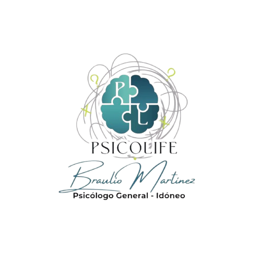
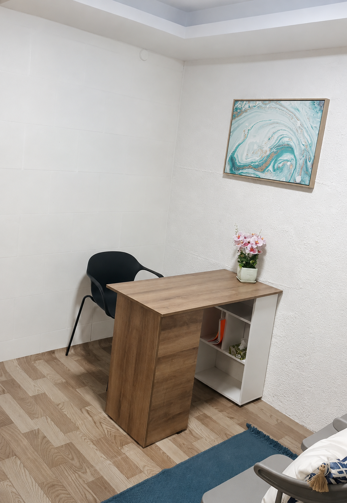
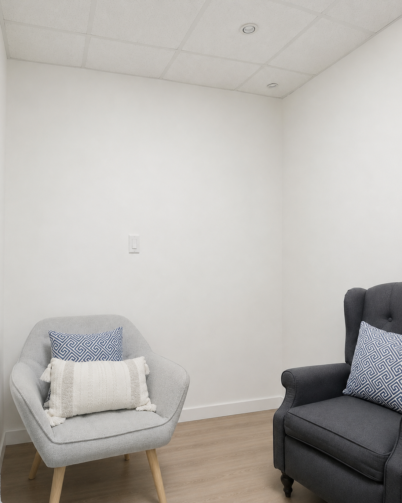
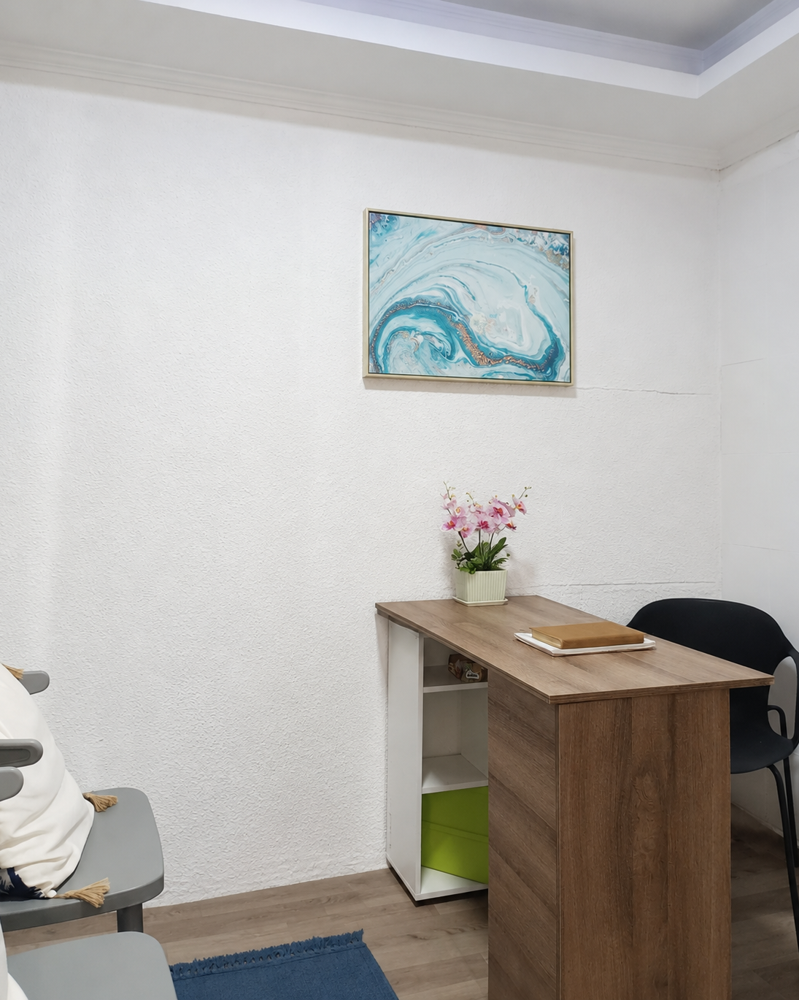
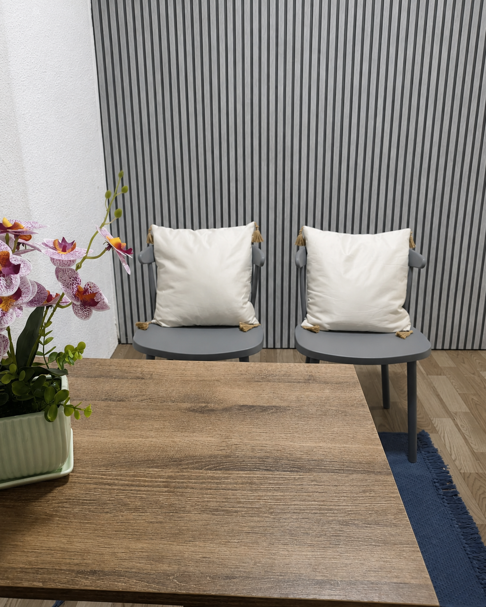

Enfoque integral
Guiar a la persona a una conexión con su entorno social, familiar y biológica.
Con herramientas creadas para tu proceso de crecimiento personal mediante un enfoque psicológico.
Agenda tu primera sesión




En Psicolife creemos que cada persona merece un espacio seguro donde pueda expresarse, comprender sus emociones para afrontar los retos de cada individuo. Nuestro compromiso es brindarte una confidencialidad estricta para tu crecimiento activo.
Cada proceso es diferente. Por eso ofrecemos un acompañamiento individual, para guiarte hacia tu equilibrio mental y alcanzar tu mejor versión.
Es un proceso sistemático para analizar el desarrollo cognitivo, emocional y social.
Evaluación de Coeficiente Intelectual a niños, adolescentes y persona que lo requiera
Nuestros servicios como profesional de la salud mental tiene como visión un acompañamiento de escucha y guía emocional para superar momentos díficiles, tratar problemas profundos que afectan su conducta humana
Guiar a la persona a una conexión con su entorno social, familiar y biológica.
Elige entre consultas presenciales o virtuales según tu comodidad.
Se valora la historia y el proceso único de cada ser humano sin emitir juicios.
Crear una capacidad para expresarnos por el espacio físico e interactuar con personas y el ecosistema de modo saludable.
Estamos listos para acompañarte en tu proceso.
Estas son algunas de las preguntas más comunes antes de iniciar un proceso terapéutico.
Sí. La primera sesión permite conocer tu situación, comprender tus necesidades y definir el mejor enfoque para tu proceso terapéutico.
Sí. Psicolife ofrece atención tanto presencial como virtual, como herramienta a tu evolución.
No. Se le brinda atención a niños, adolescentes y parejas de todos los géneros.
Generalmente las sesiones tienen una duración aproximada de 45 a 60 minutos.
Puedes hacerlo directamente desde esta página mediante Calendly o escribiendo por WhatsApp.